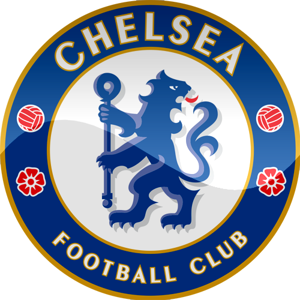

About Me
"In GOD, I TRUST."
"In GOD, I TRUST."
PCM students are not only equipped with management knowledge & skills but also encouraged to participate in various extra-curricular activities in order to develop their skills in communication, leadership and decision making.
Motherland is solely focused on contextual education.
Located in the heart of The Valley of Pokhara, the Capital of national academia, Kumudini Homes was established in 1987 with the motto "Always Aim High".
I learned my Basics. Step by Step Boarding School helped me to take my beginning step by step. I learned how to dress well and be disciplined.
Club Name |
Club History |
|---|---|
Chelsea FC |
Liverpool FC |
|
The Premier League is the top level of the English football league system. Contested by twenty clubs, it operates on a system of promotion and relegation with the English Football League. |
Liverpool Football Club is a professional football club in Liverpool, England, which competes in the Premier League, the top tier of English football. |
|
Manager: Antonio Conte |
Manager: Jurgen Klopp |
|  |

|
|
Arena/Stadium: Stamford Bridge Parent organizations: Chelsea F.C., Fordstam Ltd Locations: London, United Kingdom, Chelsea, London, United Kingdom |
Nickname: The Reds Arena/Stadium: Anfield Parent organization: Fenway Sports Group |
|
The Premier League is the top level of the English football league system. Contested by twenty clubs, it operates on a system of promotion and relegation with the English Football League. |
Liverpool Football Club is a professional football club in Liverpool, England, which competes in the Premier League, the top tier of English football. |
| Did you know: Chelsea has the fourth-highest home attendance record (82,905) of English football clubs. | Did you know: Liverpool has won the second-most elite honours (61) among English football clubs. |